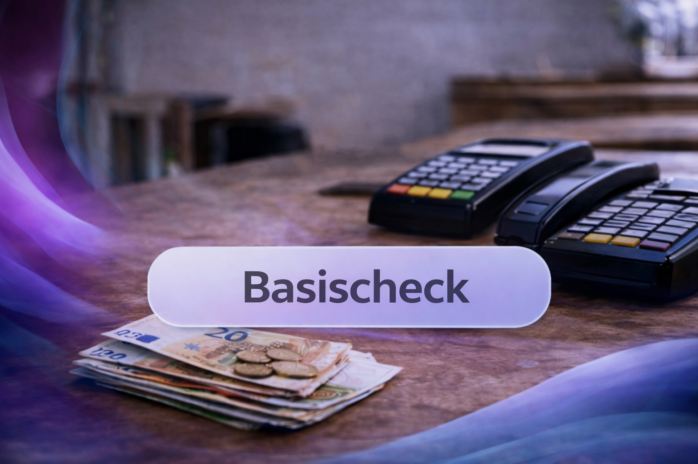

!
Werk verdwijnt uit de regio
Wanneer ondernemers elkaar niet kennen of niet kunnen doorverwijzen, gaat werk onnodig buiten de regio terechtkomen.
OpenRegio organiseert werkverdeling, openbare documenten en betrouwbaarheid per regio. Geen advertenties. Geen algoritmes. Geen ruis.
Elke regio die dit niet organiseert, verliest werk en grip zonder het te merken.

Ondernemen wordt onvoorspelbaar wanneer werk versnipperd raakt, regels ondoorzichtig zijn en besluiten niet vindbaar zijn. OpenRegio brengt structuur met regionale afspraken en openbare documenten.
Wanneer ondernemers elkaar niet kennen of niet kunnen doorverwijzen, gaat werk onnodig buiten de regio terechtkomen.
Brieven, beleidsregels en besluiten zijn vaak verspreid. Dat kost tijd en vergroot risico.
Als systemen haperen (apps, pin, bereikbaarheid), valt werk stil. Zonder basisafspraken is er geen continuïteit.
OpenRegio is geen adviesloket. Het organiseert wat er al is: werk, documenten en basiscondities — regionaal.
Kort, scanbaar, zonder marketingcircus.
Regionale werkverdeling: ondernemers kunnen werk doorzetten wanneer zij het niet uitvoeren. Vaste regio-indeling. Geen advertenties. Geen algoritmische selectie.

Document-gedreven overzicht van WOO-verzoeken, antwoorden, besluiten, mandaten en beleidsregels. Geen interpretaties, alleen wat er is — en wat ontbreekt.
Lokale basis op orde: bedrijfsvermelding, reviews en regionale vindbaarheid. Geen contentstrategie en geen advertenties.

Registratie van basiscondities: bereikbaarheid, offline functioneren en basisbetalingen. Dit wordt gebruikt binnen het netwerk.
RegioBot is document-gedreven: het helpt bij vinden, ordenen en zichtbaar maken van openbare informatie.
Hou het simpel: Basis om mee te doen, Pro voor serieuze inzet.
Voor ondernemers die willen instappen, zichtbaar worden en meedoen in de regio.
Prijs: gratis tijdens opbouw. Geen belofte, wel toegang.
Voor ondernemers die structureel willen doorverwijzen en RegioBot/WOO actief gebruiken.
OpenRegio is in opbouw: Pro groeit mee met regio's en documentsets.
OpenRegio is geen hype. Het is structuur. Als je regio meedoet, ontstaat er voorspelbaarheid.
Toegang kan regionaal worden gefaseerd. Meld je aan om op de hoogte te blijven.